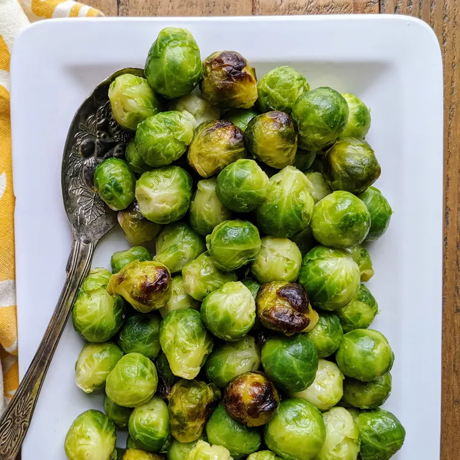

Roasted Brussels Sprouts

Description
Brussels sprouts are yummy and healthy. Yummy because of oil and salt, and healthy because of being a veggie. The brussel sprouts adds a nice bit of stank to the oil and salt.
Ingredients
- 1 1/2 pounds of Brussels sprouts, ends trimmed and yellow leaves removed
- 3 tablespoons olive oil
- 1 teaspoon kosher salt
- 1/2 teaspoon freshly ground black pepper
Steps
- Preheat oven to 400 degrees F (205 degrees C).
- Place trimmed Brussels sprouts, olive oil, kosher salt, and pepper in a large resealable plastic bag. Seal tightly, and shake to coat. Pour onto a baking sheet, and place in center oven rack.
- Roast in the preheated oven for 30 to 45 minutes, shaking pan every 5 to 7 minutes for even browning. Reduce heat when necessary to prevent burning. Brussels sprouts should be darkest brown, almost black, when done. Adjust seasoning with kosher salt, if necessary. Serve immediately.